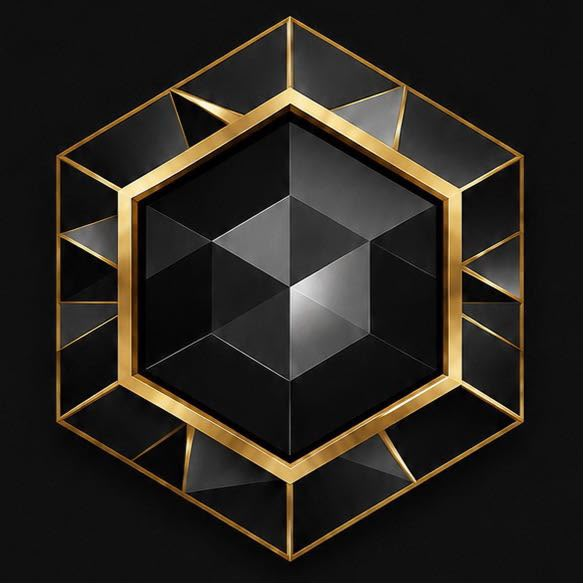
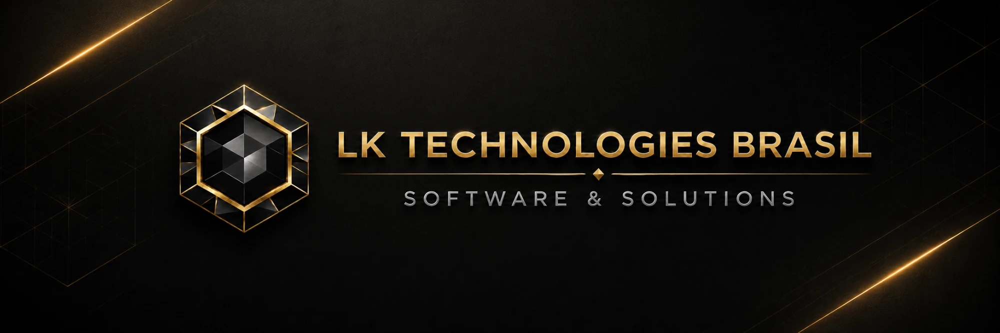

LK Technologies Brasil · Software & Solutions
Sistemas, automações e integrações que reduzem retrabalho e dão mais controle sobre a operação da sua empresa.
lktechnologiesbrasil.com
02 / 11
O problema
Quando processos dependem de tarefas manuais, informações espalhadas ou ferramentas que não se conectam, a operação perde tempo e controle.
03 / 11
A solução
Sistemas sob medida
Painéis, fluxos e ferramentas personalizadas para organizar dados, clientes e processos com controle real.
Automação de processos
Tarefas repetitivas automatizadas, com menos erros operacionais e mais tempo para a equipe.
Integração de sistemas
Sistemas, planilhas e ferramentas conectados, centralizando a informação em um só lugar.
04 / 11
O que entregamos
Sistemas Sob Medida
Automação de Processos
Integração de Sistemas
Sites e Landing Pages
05 / 11
Como fazemos
Arquitetura preparada para evolução
Segurança aplicada desde a base
Performance como premissa
Organização operacional real
06 / 11
Segmentos
Imobiliárias
Atendimento, informações de imóveis, documentos e rotinas comerciais em fluxos centralizados.
Advocacia
Informações, documentos, atendimento e processos internos do escritório organizados.
Comércios
Informações conectadas, menos trabalho manual e mais visibilidade das rotinas.
Partimos da operação real para definir o que vale automatizar, integrar ou transformar em software.
07 / 11
Liderança
Lukas Alexandre Rosa
Fundador & Software Architect
Leonardo Silva Kirime
Fundador & Security Developer
Clique em um card para ver mais.
08 / 11
Software real
Vaultify
LK System
Interfaces reais dos sistemas que construímos e operamos.
09 / 11
Resultados
Construímos soluções que funcionam, evoluem e fazem diferença na operação de cada cliente.
3x
Mais eficiência
Processos mais organizados com sistemas digitais sob medida.
Ágil
Entrega
Desenvolvimento focado em entregas funcionais e iterativas.
100%
Comprometimento
Atenção total a cada cliente, do início até a entrega final.
10 / 11
Próximo passo

lktechnologiesbrasil.com · Solicite uma proposta